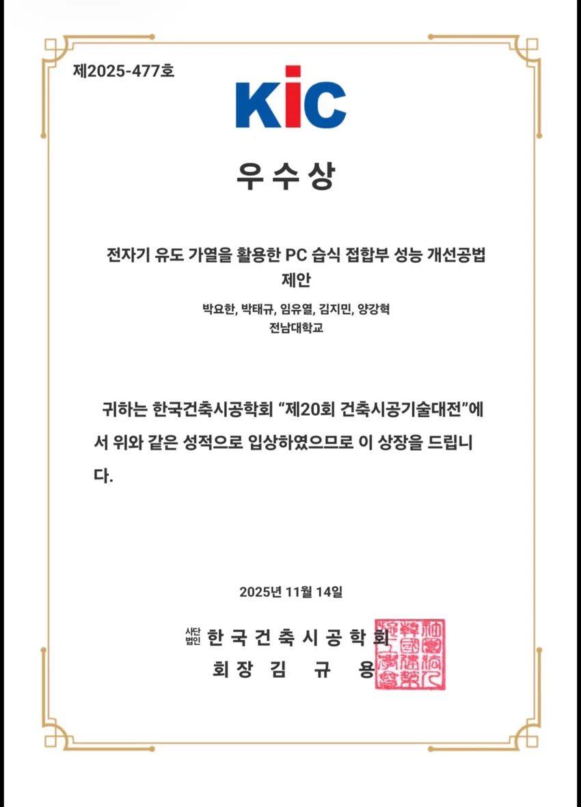

INDUCTION HEATING FOR PC JOINTS
전자기 유도 가열을 활용한 PC 습식 접합부 성능 개선공법 제안
전자기 유도가열, 강섬유, U-bar를 결합해 PC 습식 접합부의 양생과 연결 성능을 함께 개선하는 공법을 제안했습니다. 건축시공기술대전 우수상 수상작입니다.
- YEAR / SEMESTER
- 3학년 2학기 · 2025
- COURSE
- 창의적건축공학설계
- CONTRIBUTION
- 팀과제 · 공동 출품
- SITE / SUBJECT
- PC 습식 접합부
THE IDEA
생각의 출발점
프리캐스트 콘크리트 부재의 현장 접합에서는 양생 시간과 구조적 연속성을 함께 고려해야 합니다. 접합부 내부 강섬유를 유도가열로 가열하고 U-bar로 연결을 보완하는 통합 방식을 구상했습니다.
- 01
세 요소를 하나의 접합 전략으로
IH 유도가열은 국부 가열을, 강섬유는 가열 매개와 재료 보강을, U-bar는 부재 사이의 연결을 담당하도록 계획했습니다. 각 요소의 선행 연구를 살펴 조합의 가능성을 제시했습니다.
- 02
현장 적용을 생각한 모듈
600 × 600 mm 가열 패널에 코일, 냉각팬, 고정 장치와 온도 조절부를 배치했습니다. 접합부에 맞추어 설치하고 분리할 수 있는 장치 구성을 시각화했습니다.
- 03
제안에서 검증으로
후속 과제로 가열의 균일성, 양생 조건, 접합부의 구조 성능을 함께 확인할 필요가 있습니다. 문헌에서 확인한 개별 기술의 결과와 이번 통합 공법의 실제 검증은 구분했습니다.
COMPETITION & AWARD
우수상.
제20회 건축시공기술대전
한국건축시공학회 · 2025.11.14
전자기 유도가열을 활용한 PC 습식 접합부 성능 개선 공법 제안 · 공동 출품
공모전 기록 모두 보기 ↗
상장 크게 보기 ↗PROCESS & OUTCOME
과정과 결과
사진을 누르면 크게 볼 수 있습니다.